library(dplyr)
library(dtplyr)
library(tidyr)
library(DataExplorer)
library(ggplot2)在拿到一个新的育种数据集时，直接开始建模（如估算遗传参数）往往是危险的。探索性数据分析 (Exploratory Data Analysis, EDA) 是必不可少的一步。它可以帮助我们：
- 了解数据的基本结构和质量（是否有缺失值、异常值）。
- 查看变量的分布特征（是否正态、是否有偏）。
- 初步探索变量间的关系（相关性、组间差异）。
本文将以一个水产家系育种数据集为例，展示如何利用 R 语言中的 DataExplorer 包和 tidyverse 系列工具，快速完成高质量的 EDA。
1. 准备工作
首先，我们需要加载必要的 R 包。 * tidyverse: 数据科学的核心工具集（包含 dplyr, ggplot2, tidyr 等）。 * DataExplorer: 专为自动化 EDA 设计的强大工具。 * dtplyr: data.table 的 dplyr 后端，处理大数据集时更快（可选）。
2. 数据导入与初探
我们读取名为 Exam2025.csv 的数据集。
# 读入数据
exam_2025 <- read.csv("Exam2025.csv", header = TRUE)
# 查看基本结构
str(exam_2025)'data.frame': 1568 obs. of 6 variables:
$ Fami: chr "F01" "F01" "F01" "F01" ...
$ ID : chr "F01-1" "F01-2" "F01-3" "F01-4" ...
$ M1BW: num 3.39 3.39 3.39 3.39 3.39 3.39 3.39 3.39 3.39 3.39 ...
$ Time: int 99 99 100 100 100 100 100 100 101 101 ...
$ Tank: chr "T1" "T1" "T1" "T1" ...
$ Pop : chr "P1" "P1" "P1" "P1" ...从 str() 的输出可以看到： * 字符型变量 (chr): Fami (家系), ID (个体号), Tank (测试池), Pop (群体)。 * 数值型变量 (num/int): M1BW (入池体重), Time (存活时间)。
DataExplorer 提供了更直观的结构查看方式：
plot_str(exam_2025, type="r")introduce() 函数则能直接给出数据的“体检报告”：
introduce(exam_2025) rows columns discrete_columns continuous_columns all_missing_columns
1 1568 6 4 2 0
total_missing_values complete_rows total_observations memory_usage
1 0 1568 9408 1435843. 数据全景概览
plot_intro() 是我最喜欢的函数之一，它能生成一张包含变量类型分布、缺失值比例、完整行比例的仪表盘。
plot_intro(exam_2025)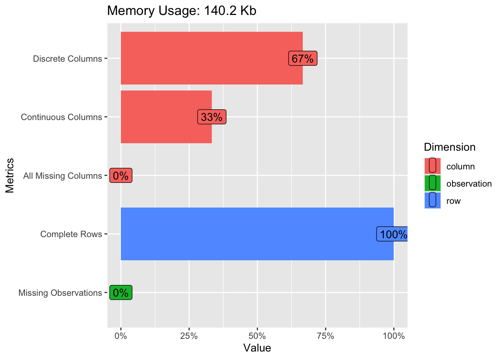
解读：这张图告诉我们数据质量非常高，没有缺失值。如果有缺失值，这里会显眼的标出红色区域，提示我们需要进行插补或剔除。
4. 单变量分析：分布与频次
离散变量 (Categorical)
对于分类变量（如群体、家系），我们关心的是样本量的平衡性。
# 查看各分类水平的频次
# maxcat = 100 确保显示所有家系（如果家系数量很多）
plot_bar(exam_2025, maxcat = 100)1 columns ignored with more than 100 categories.
ID: 1197 categories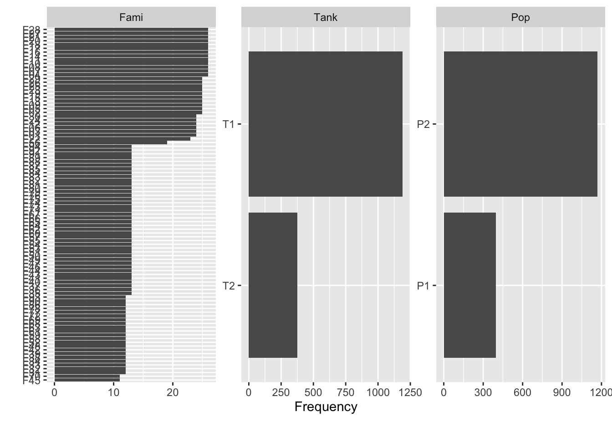
解读： * Tank: T1 和 T2 两个测试池的样本量基本一致。 * Pop: P2 的个体数明显多于 P1。 * Fami: 大多数家系的测试个体数在 10-25 尾之间，但有少数家系超过 25 尾。
我们还可以通过 by 参数进行分组查看，例如查看不同群体在各测试池中的分布：P1群体在T2池中的占比，明显小于T1池。
plot_bar(exam_2025, by="Pop", maxcat = 100)1 columns ignored with more than 100 categories.
ID: 1197 categoriesWarning: `aes_string()` was deprecated in ggplot2 3.0.0.
ℹ Please use tidy evaluation idioms with `aes()`.
ℹ See also `vignette("ggplot2-in-packages")` for more information.
ℹ The deprecated feature was likely used in the DataExplorer package.
Please report the issue at
<https://github.com/boxuancui/DataExplorer/issues>.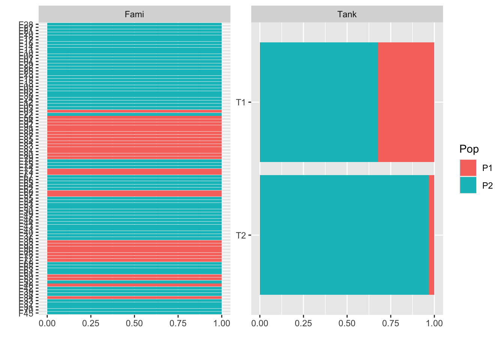
连续变量 (Continuous)
对于数值变量（体重、时间），我们关心的是分布形态（正态性、偏度）。
plot_histogram(exam_2025)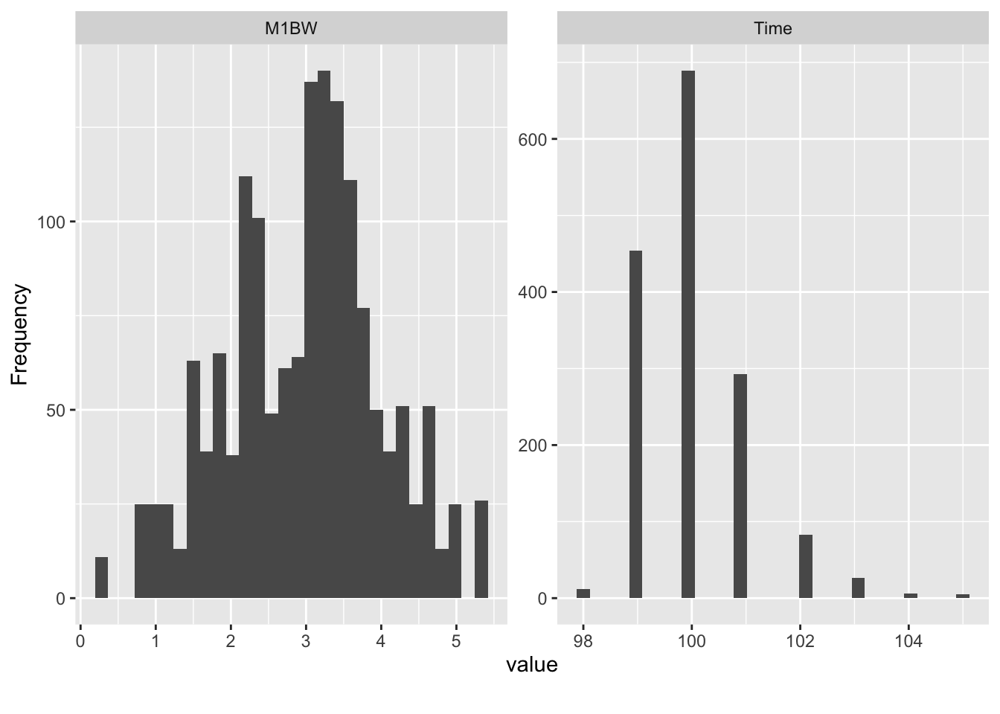
解读： * M1BW (体重): 近似正态分布，均值在 3g 左右。 * Time (存活时间): 呈现右偏分布（长尾在右侧），峰值在 100 小时左右，说明小部分个体存活时间较长，但也有部分个体死亡较早。
正态性检验 (QQ Plot)
在进行遗传评估（如使用线性混合模型）前，我们需要检查数据是否大体符合正态分布假设。QQ 图（Quantile-Quantile Plot）是一个非常直观的标准诊断工具。
如何解读 QQ 图？ QQ 图将数据的实际分位数（y轴）与理论正态分布的分位数（x轴）进行对比。 * 理想情况：如果数据完全服从正态分布，所有的点应该紧密地落在一条 45 度的对角直线上。 * 偏离情况： * 如果点呈现弯曲（香蕉状），说明数据分布是偏态的（如 Time 变量）。 * 如果两端的点偏离直线，说明数据存在长尾（极端值较多）。
为什么这很重要？ 许多统计方法（如 t 检验、ANOVA、BLUP 育种值估算）都假设数据（或其残差）服从正态分布。如果 QQ 图显示严重偏离（例如 Time 变量），我们可能需要对数据进行转换（如取对数、开方）或使用非参数方法，以确保分析结果的可靠性。
# 只选择感兴趣的数值变量进行检验
exam_2025 |>
select(M1BW, Time) |>
plot_qq()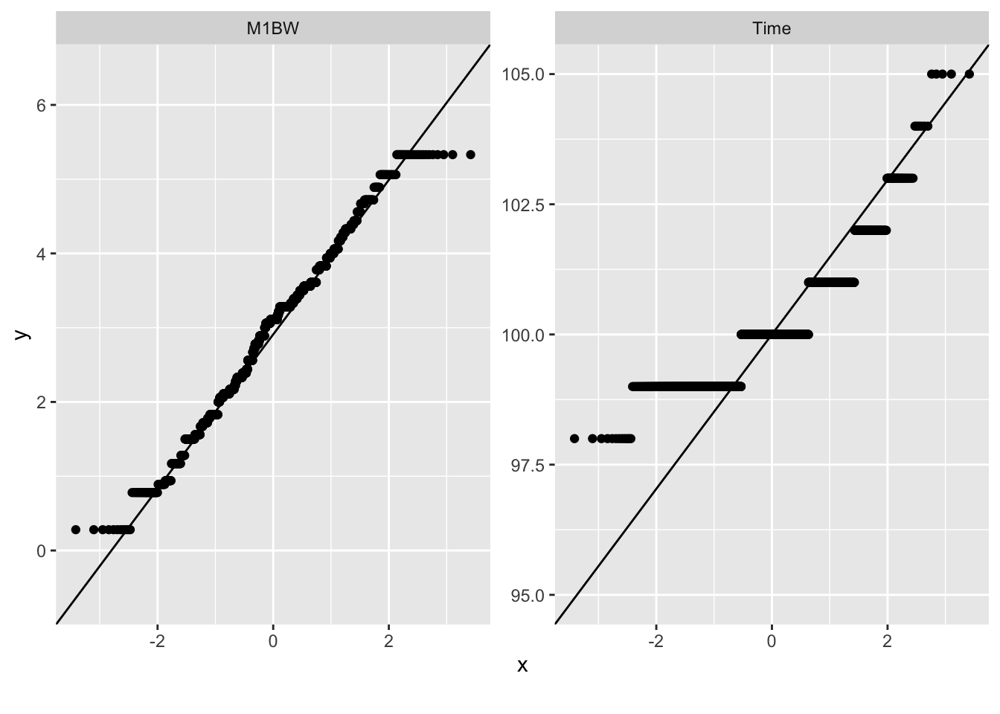
5. 双变量分析：相关性与差异
描述性统计
除了图形，我们往往还需要具体的统计数值来写入报告。下面计算各群体在不同性状上的均值 (Mean)、标准差 (SD) 和变异系数 (CV)。
summary_table <- exam_2025 |>
group_by(Pop) |>
summarise(
N = n(),
BW_Mean = mean(M1BW, na.rm = TRUE),
BW_SD = sd(M1BW, na.rm = TRUE),
Time_Mean = mean(Time, na.rm = TRUE),
Time_SD = sd(Time, na.rm = TRUE)
) |>
mutate(
BW_CV = round(BW_SD / BW_Mean * 100, 2),
Time_CV = round(Time_SD / Time_Mean * 100, 2)
)
# 使用 knitr::kable 输出美观的表格
knitr::kable(summary_table, digits = 2, caption = "不同群体的描述性统计")| Pop | N | BW_Mean | BW_SD | Time_Mean | Time_SD | BW_CV | Time_CV |
|---|---|---|---|---|---|---|---|
| P1 | 397 | 3.43 | 0.77 | 100.11 | 1.04 | 22.55 | 1.04 |
| P2 | 1171 | 2.84 | 1.07 | 100.06 | 0.99 | 37.80 | 0.99 |
变量间的相关性
我们通常想知道性状之间是否存在关联。例如，入池体重 (M1BW) 是否会影响存活时间 (Time)？
plot_correlation(exam_2025, type=c("continuous"))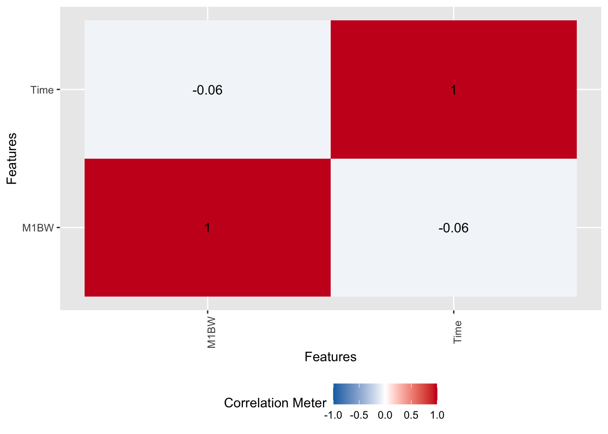
解读：热图显示 M1BW 和 Time 的相关系数接近 0。这意味着在当前实验条件下，个体的初始大小对其耐受性（存活时间）几乎没有影响。这是一个重要的生物学发现。
为了排除环境（测试池）效应的干扰，我们可以分测试池查看：
# 分测试池查看相关性
exam_2025 |>
filter(Tank == "T1") |>
plot_correlation(type = c("continuous"), title = "Correlation in Tank T1")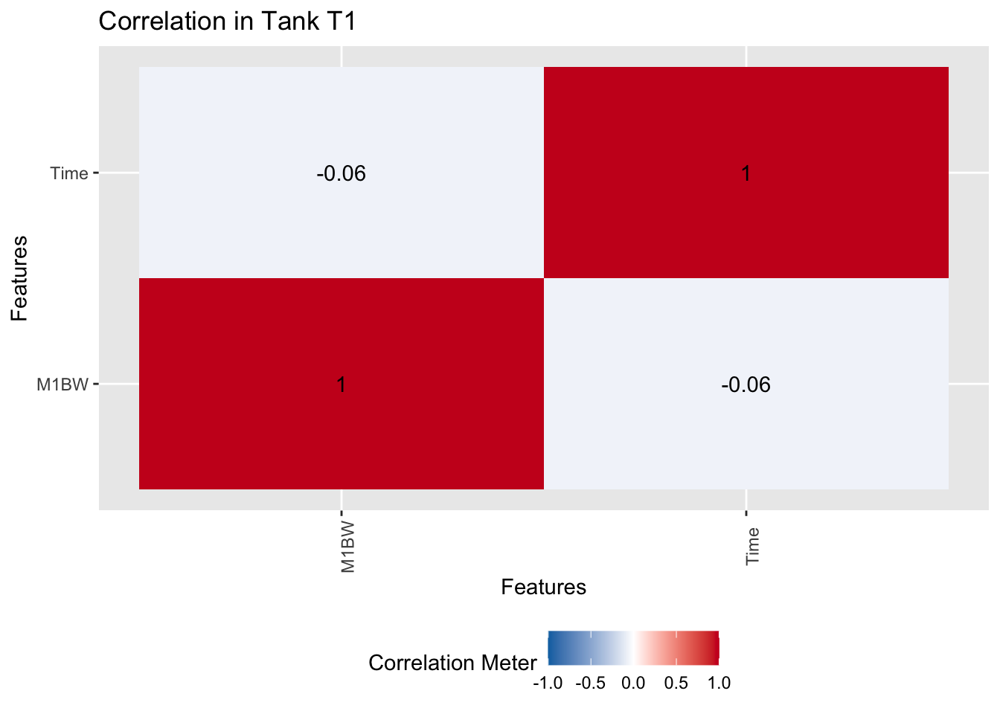
exam_2025 |>
filter(Tank == "T2") |>
plot_correlation(type = c("continuous"), title = "Correlation in Tank T2")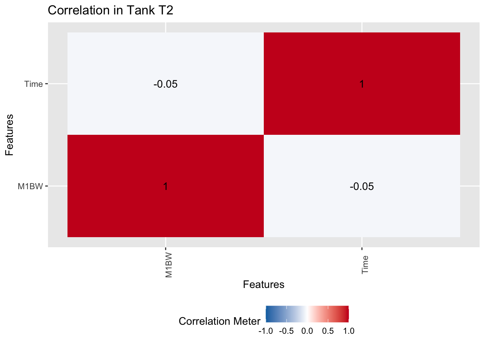
结论依然一致。
组间差异 (箱型图)
箱型图 (Boxplot) 是比较不同组别（如不同群体、不同家系）性状差异的神器。
不同群体的表现差异：
exam_2025 |>
select(M1BW, Time, Pop) |>
plot_boxplot(by = "Pop")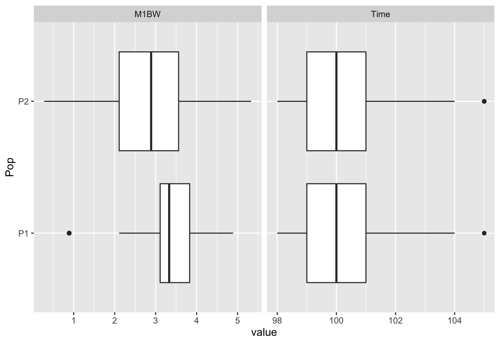
不同家系的存活时间差异：
exam_2025 |>
select(Fami, Time, Pop) |>
plot_boxplot(by = "Fami")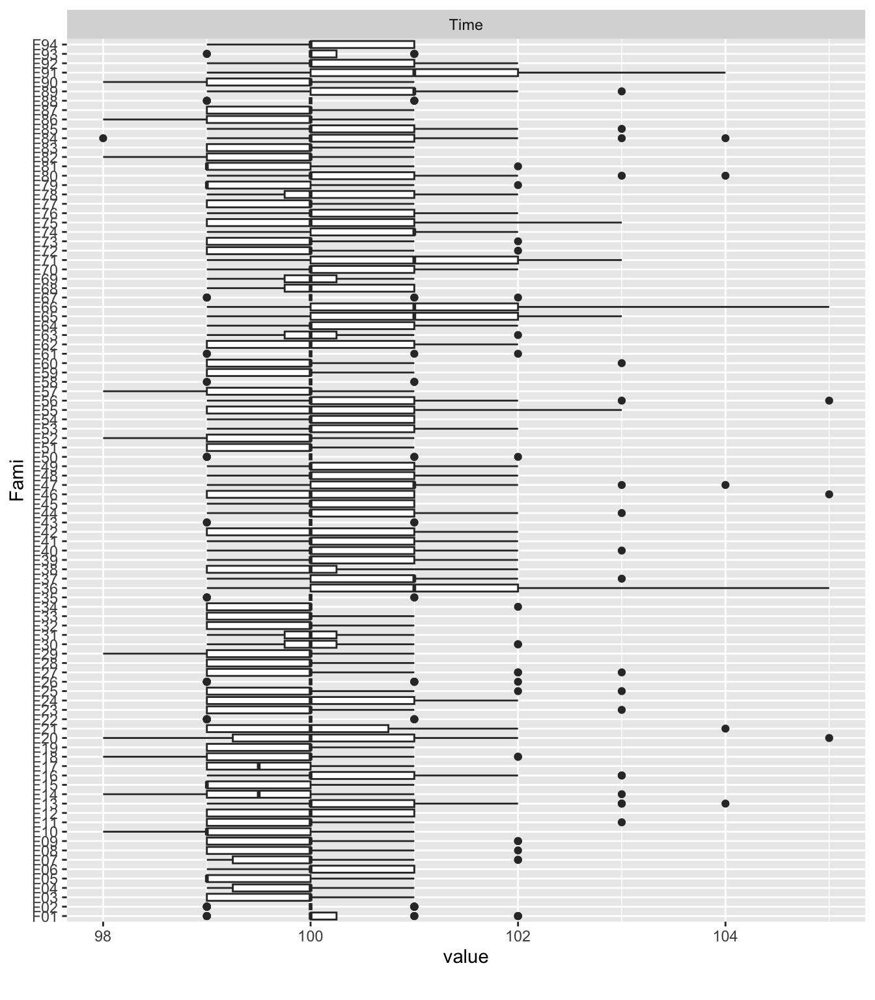
通过这张图，我们可以快速识别出哪些家系表现优异（中位线高），哪些家系表现较差。
6. 进阶分析：家系表型的一致性
在育种中，我们非常关心基因型与环境的互作 (GxE)。简单来说，就是同一个家系在不同环境（Tank T1 vs T2）下的表现是否一致？
这需要计算家系均值在两个测试池之间的相关性。DataExplorer 主要处理原始数据，对于这种特定的统计需求，我们需要结合 dplyr 和 tidyr 进行数据重塑（Reshape）。
步骤： 1. Summarize: 计算每个家系在每个测试池内的平均存活时间。 2. Pivot: 将数据从“长格式”转换为“宽格式”，让 T1 和 T2 变成两列。 3. Correlate & Plot: 计算相关系数并绘图。
# 1. 计算家系均值
family_tank_summary <- exam_2025 |>
group_by(Fami, Tank) |>
summarise(Mean_Time = mean(Time, na.rm = TRUE), .groups = "drop")
# 2. 转换为宽格式并剔除缺失值 (解决 "Removed rows" 警告)
family_wide <- family_tank_summary |>
pivot_wider(names_from = Tank, values_from = Mean_Time) |>
drop_na(T1, T2)
# 3. 计算相关系数
cor_val <- cor(family_wide$T1, family_wide$T2)
# 4. 绘制散点图
ggplot(family_wide, aes(x = T1, y = T2)) +
geom_point(alpha = 0.6, size = 3, color = "steelblue") +
geom_smooth(method = "lm", formula = 'y ~ x', color = "darkred", se = FALSE) + # 指定 formula 解决消息提示
geom_text(aes(label = Fami), vjust = -0.5, size = 3, check_overlap = TRUE) +
labs(
title = paste("家系在不同测试池中的相关性 (r =", round(cor_val, 2), ")"),
subtitle = "每个点代表一个家系",
x = "Tank T1 平均存活时间 (h)",
y = "Tank T2 平均存活时间 (h)"
) +
theme_minimal(base_family = "STHeiti") # 设置支持中文的字体解决乱码 (macOS 常用 STHeiti 或 PingFang SC)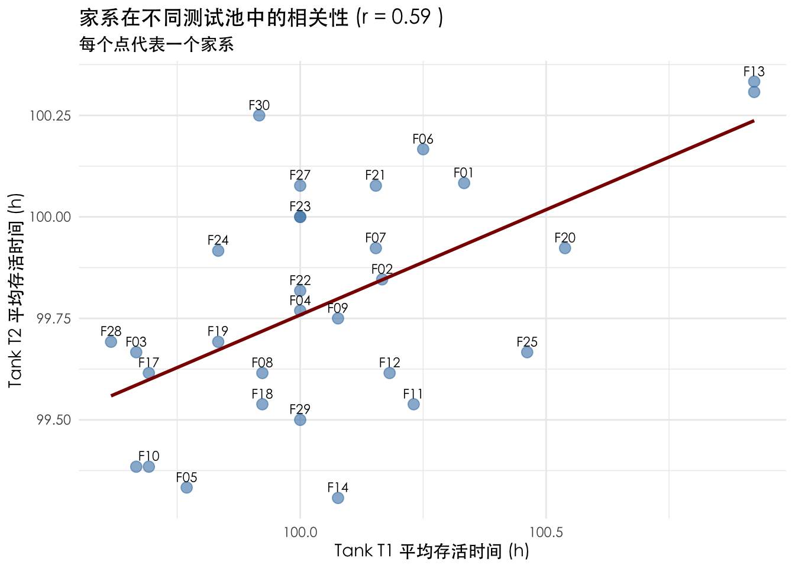
解读： 如果相关系数 \(r\) 很高（接近 1），说明家系在两个测试池中的表现非常一致，环境误差较小，数据可信度高。如果 \(r\) 很低，则可能存在较大的环境干扰或 GxE 效应。
总结
通过 DataExplorer，我们仅用几行代码就完成了对数据的全面体检。结合 tidyverse 的灵活处理，我们还能深入探讨更复杂的育种问题。这种 “Overview first, zoom and filter, then details-on-demand” 的分析流程，是高效数据科学工作的典范。